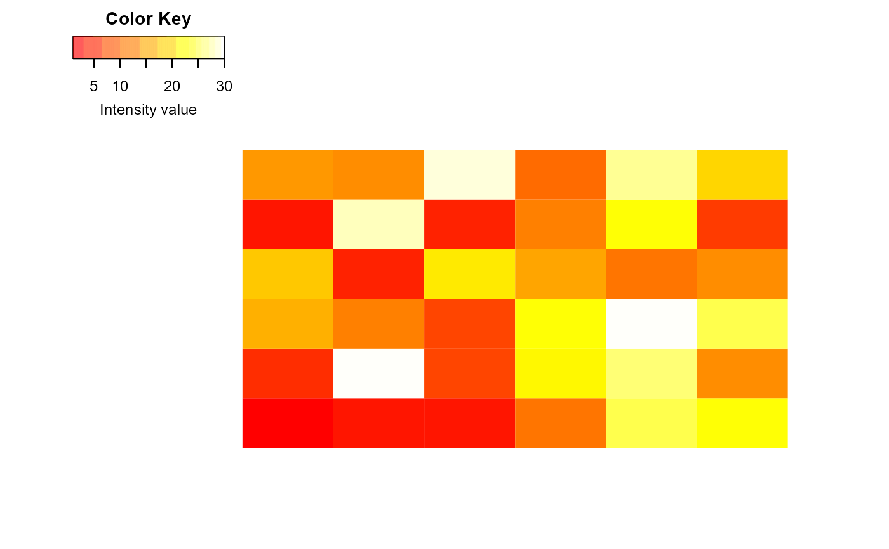

R/plots_heatmap.R, R/mod_plots_heatmap.R
heatmap_plot.RdThis function is a wrapper to 'heatmap.2' of the package gplots
that displays a numeric matrix
heatmapD(qData, conds, distfun = "euclidean", hclustfun = "complete")
mv.heatmap(
x,
col = grDevices::heat.colors(100),
srtCol = NULL,
labCol = NULL,
labRow = NULL,
key = TRUE,
key.title = NULL,
main = NULL,
ylab = NULL
)
mod_heatmap_plot_ui(id)
mod_heatmap_plot_server(id, obj, conds, width = 900)A matrix or array quantitative values
xxx
A character(1) defining the distance used by the clustering
algorithm to compute. Default value is 'euclidean'. See help(heatmap.2)
the clustering algorithm used to build the dendrogram.
Default value is 'complete'. See help(heatmap.2)
A matrix or array containing the quantitative data.
Colors used for the image. Defaults to heat colors (heat.colors).
Angle of column conds, in degrees from horizontal
Character vectors with column conds to use.
Character vectors with row conds to use.
Logical indicating whether a color-key should be shown.
Main title of the color key. If set to NA no title will be plotted.
Main title; default to none.
y-axis title; default to none.
xxx
xxx
xxx
A heatmap NA
The function heatmapD()
The function [] is inspired from the function 'heatmap.2' that displays a numeric matrix. For more information, please refer to the help of the heatmap.2 function.
library(QFeatures)
data(ft)
conds <- design(ft)$Condition
#> Error in (function (classes, fdef, mtable) { methods <- .findInheritedMethods(classes, fdef, mtable) if (length(methods) == 1L) return(methods[[1L]]) else if (length(methods) == 0L) { cnames <- paste0("\"", vapply(classes, as.character, ""), "\"", collapse = ", ") stop(gettextf("unable to find an inherited method for function %s for signature %s", sQuote(fdef@generic), sQuote(cnames)), domain = NA) } else stop("Internal error in finding inherited methods; didn't return a unique method", domain = NA)})(list(structure("QFeatures", package = "QFeatures")), new("standardGeneric", .Data = function (object, ...) standardGeneric("design"), generic = structure("design", package = "BiocGenerics"), package = "BiocGenerics", group = list(), valueClass = character(0), signature = "object", default = NULL, skeleton = (function (object, ...) stop(gettextf("invalid call in method dispatch to '%s' (no default method)", "design"), domain = NA))(object, ...)), <environment>): unable to find an inherited method for function 'design' for signature '"QFeatures"'
#----------------------------------------------
# Plots a heatmap for generic quantitative data
#----------------------------------------------
heatmapD(assay(ft, 1), conds)
#> Error in heatmapD(assay(ft, 1), conds): object 'conds' not found
#----------------------------------------------
# Plots a heatmap for missing values visualization
#----------------------------------------------
library(QFeatures)
data(ft)
mv.heatmap(assay(ft, 1))

#----------------------------------------------
# Launches a shiny module
#----------------------------------------------
if(interactive()){
library(QFeatures)
library(shiny)
library(DaparToolshed)
data(ft)
ui <- mod_heatmap_plot_ui('plot')
server <- function(input, output, session) {
conds <- design(ft)$Condition
mod_heatmap_plot_server('plot',
obj = reactive({ft[[1]]}),
conds = reactive({conds}),
pal.name = reactive({'Dark2'})
)
}
shinyApp(ui=ui, server=server)
}